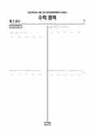

문제지

전국연합학력평가 · 시·도교육청 주관
2022년 4월 고3 학력평가 수학 기하 1등급컷은 원점수 76점(추정), 표준점수 최고점은 160점입니다.
원점수 1등급컷은 공식 발표값이 아니라 EBSi·입시기관 값입니다. 등급별 값은 등급컷 표, 출처 구분은 데이터 원칙에 있습니다.

시험지를 먼저 풀어 보세요. 등급컷·표준점수·난이도는 흐리게 가려 뒀어요.
| 등급 | 원점수 | 표준점수 | 백분위 |
|---|---|---|---|
| 1 | 76 | 138 | 96 |
| 2 | 65 | 128 | 88 |
| 3 | 54 | 118 | 77 |
| 4 | 35 | 103 | 59 |
| 5 | 19 | 89 | 39 |
| 6 | 12 | 81 | 21 |
| 7 | 10 | 79 | 12 |
| 8 | 5 | 75 | 4 |
등급별 컷 · 입시기관 2곳 원점수 추정 종합(이투스·종로학원) · 공통+선택 점수 조합에 따라 다를 수 있음 · 만점 100점
| 등급 | 표준점수 이상 | 인원(명) | 비율 |
|---|---|---|---|
| 1 | 138 | 11,800 | 4.12589% |
| 2 | 128 | 22,375 | 7.82345% |
| 3 | 118 | 33,303 | 11.6444% |
| 4 | 103 | 50,492 | 17.6546% |
| 5 | 89 | 56,351 | 19.7032% |
| 6 | 81 | 55,854 | 19.5294% |
| 7 | 79 | 25,394 | 8.87905% |
| 8 | 75 | 20,625 | 7.21156% |
| 9 | 66 | 9,805 | 3.42833% |
수학 영역 전체 응시자 기준이에요.
출처: 시·도교육청이 공개한 전국연합학력평가 성적 분석·통계자료(공개 자료 보기).
EBSi 응답자 기준으로 가장 많이 틀린 문항은 21번(4점, 주관식)이고, 오답률은 95%입니다. 오답률 50%를 넘은 문항은 10개입니다.
| 순위 | 문항 | 배점 | 오답률 | 정답 | 많이 고른 오답 |
|---|---|---|---|---|---|
| 1 | 21번 | 4점 | 95% | 170 | 주관식 |
| 2 | 22번 | 4점 | 93.3% | 30 | 주관식 |
| 3 | 20번 | 4점 | 86% | 240 | 주관식 |
| 4 | 29번 | 4점 | 79.2% | 21 | 주관식 |
| 5 | 30번 | 4점 | 76.5% | 13 | 주관식 |
| 6 | 13번 | 4점 | 71.5% | ⑤ | ④ 23.7% |
| 7 | 15번 | 4점 | 69% | ⑤ | ③ 22.2% |
| 8 | 14번 | 4점 | 66.3% | ④ | ③ 26.1% |
| 9 | 18번 | 3점 | 59.5% | 9 | 주관식 |
| 10 | 28번 | 4점 | 50.3% | ③ | ⑤ 13.9% |
| 11 | 19번 | 3점 | 48.8% | 11 | 주관식 |
| 12 | 17번 | 3점 | 46.3% | 32 | 주관식 |
| 13 | 11번 | 4점 | 45.8% | ③ | ④ 21.1% |
| 14 | 26번 | 3점 | 44.3% | ⑤ | ③ 13.4% |
| 15 | 7번 | 3점 | 43.9% | ④ | ② 19.5% |
EBSi 가채점 응답자 기준 · 전 문항 중 오답률 상위 15문항
출처: EBSi 역대 등급컷·오답률 공개 화면. 가채점에 참여한 EBSi 이용자 응답이라 전체 응시자 정답률과는 다를 수 있습니다.
발행 기관: 시·도교육청(전국연합학력평가). 파일 위치: 이 사이트가 보관한 사본. 저작권은 발행 기관에 있습니다. 원본과 다르거나 게시 중단이 필요하면 연락처로 알려 주세요. 등급컷 출처 구분은 데이터 원칙에서 설명합니다.
막대 색은 역대 대비 난이도 · 진한 막대가 이 시험 · 막대를 누르면 그 회차로 이동
| 회차 | 1등급컷 | 표점 최고 | 1등급 표점 | 난이도 |
|---|---|---|---|---|
| 4월 학평2022년 고3이 시험 | 76 | 160 | 138 | 매우 어려움 |
| 3월 학평2022년 고3 | 75 | 165 | 141 | 매우 어려움 |
| 10월 학평2021년 고3 | 79 | 163 | 140 | 매우 어려움 |
| 7월 학평2021년 고3 | 88 | 144 | 135 | 쉬움 |
| 4월 학평2021년 고3 | 84 | 147 | 133 | 매우 쉬움 |
| 3월 학평2021년 고3 | 88 | 157 | 139 | 매우 쉬움 |
공통과목 21번(4점, 95.0%)은 공차가 자연수이고 모든 항이 정수인 등차수열의 조건 문항, 22번(4점, 93.3%)은 삼차함수와 도함수의 곱으로 정의한 함수 문항, 20번(4점, 86.0%)은 등식을 만족시키는 삼차함수 문항이었습니다.
객관식 13번(71.5%)은 다항함수의 극한 조건, 15번(69.0%)은 원에 내접하는 사각형의 변의 길이를 다룬 문항이었습니다.
기하 29번(4점, 79.2%)은 포물선 위의 점에서 그은 접선과 초점을 다룬 문항, 30번(76.5%)은 쌍곡선과 두 초점 문항이었습니다. 기하 응시자에게는 공통 21·22·20번이 모두 선택과목 문항보다 어려웠습니다.
수열 21번이 미분 22번보다 어려웠던 회차입니다. 등차수열 조건 문항은 공차와 첫째항을 미지수로 두고 조건을 하나씩 대입해 경우를 나누는 연습이 효과적입니다.